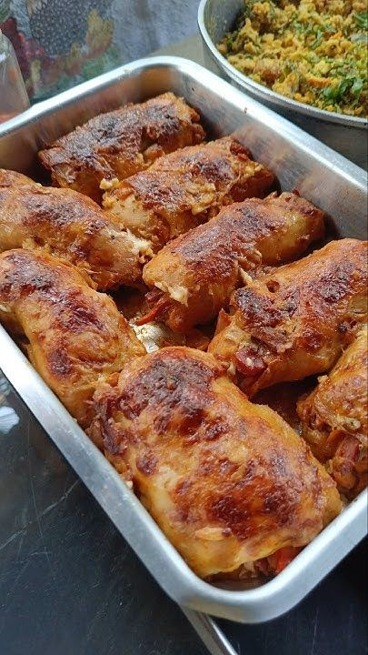

Aves · Frango
Enroladinhos Meireles

Ingredientes
- 4 peitos de frango sem osso cortados ao meio
- Sal a gosto
- 1 cenoura raspada no ralador grosso
- ⅓ xícara de uvas-passas pretas sem sementes
- 1 maçã verde com casca ralada no ralador grosso
- 2 colheres (sopa) de vinagre de vinho branco ou de maçã
- 4 colheres (sopa) de manteiga ou margarina
- 1 garrafinha de leite de coco
- 1 colher (chá) de gengibre ralado
Modo de preparo
- Abra cada metade de peito com uma faca afiada, formando um bife largo. Tempere com sal.
- Misture cenoura, passas, maçã, vinagre e sal. Divida em oito partes e coloque sobre cada peito. Enrole e prenda com palito ou barbante.
- Preaqueça o forno em temperatura média (180 °C). Arrume os rolinhos num refratário.
- Derreta a manteiga com o leite de coco e o gengibre em fogo brando, mexendo sempre. Despeje sobre os peitos e asse por cerca de 40 minutos, até dourar e ficar macio. Deixe esfriar e congele.
Proteja as pontas dos palitos com papel-alumínio para não furarem a embalagem. Congelamento: coloque os rolinhos numa travessa forrada com plástico, cubra com filme e congele; passe para saco plástico, retire o ar, vede, etiquete e congele. Descongelamento: descongele na geladeira de um dia para o outro; transfira para refratário e aqueça em forno brando.